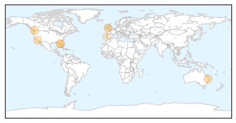
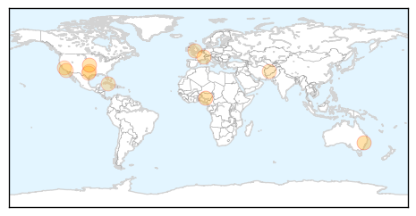

Measles
30-Day Web Trend
0 alerts, 0 warnings

30-Day Twitter Trend
1 alerts, 0 warnings

Article Locations

Article Confidences

Top Articles:
- 0.978
- Letter: Lack of vaccination spreads death
- 0.947
- Student diagnosed with measles in Brisbane's south
- 0.939
- Fear of vaccines is putting lives at risk
- 0.855
- Health officials: Kissimmee resort visitor had measles
- 0.841
- Dana Hills High School
- 0.703
- International Traveler Had Measles While In South Florida « CBS Miami
- 0.618
- Measles can compromise eyesight
Top Tweets:
-
No tweets found for Mar 26, 2015
Influenza
30-Day Web Trend
0 alerts, 0 warnings

30-Day Twitter Trend
0 alerts, 0 warnings

Article Locations
Article Confidences

Top Articles:
- 0.997
- The 2015 flu vaccine – what’s new, who should get it and why
- 0.966
- All Eyes On Nigeria?
- 0.929
- Commercial Flock in Kansas Tests Positive for Low-path Avian Flu
- 0.772
- Under the influence
- 0.751
- March 26, 2015 Archives
- 0.751
- March 25, 2015 Archives
- 0.751
- March 25, 2015 Archives
- 0.751
- March 25, 2015 Archives
- 0.751
- March 25, 2015 Archives
- 0.751
- March 25, 2015 Archives
- 0.751
- March 25, 2015 Archives
- 0.725
- News Details
Top Tweets:
-
No tweets found for Mar 26, 2015